Caso 014 · Taller DIEZ 05 · 2017 · infraestructura pública (estación de bomberos)
Consigna B (lectura diagramática del boceto). No tomo el dibujo como una forma que copiar sino como un diagrama de tres relaciones: (1) una banda alargada que flota sobre el suelo, sostenida por pocos apoyos; (2) una línea de terreno que sube y baja, que leo como recorrido de salida y no como topografía (la parcela es llana); (3) trazos horizontales cortos en la banda, que leo como franjas de luz y ventilación. De ahí sale el proyecto: un plano elevado de 44,5 × 14 m (planta primera, cota +5,00) sobre un suelo operativo (planta baja y explanada de salida), con una galería-umbral de 4 m al sur bajo la cubierta, que da sombra a la explanada, protege a las personas que cruzan hacia los vehículos y muestra desde la avenida un edificio reconocible como equipamiento público (pilotis, banda continua, tres puertas seccionales grandes).
Clima. Aw (tropical con estación seca), 28-31 °C en verano, oscilación diaria moderada, humedad alta, 1.500 mm de lluvia concentrada, ciclones y sol casi cenital. Estrategia: sombra profunda (galería de 4 m y voladizo de 0,5 m), ventilación cruzada en las salas de día, masa en planta baja y cubierta ligera ventilada, y construcción resistente a viento y humedad.
Programa (polivalente mínima frente a la versión habitual). El encargo no fija unidades. Versión mínima: 2 vehículos, 1 embarcación, 4 camas y estancias multiuso (~700 m²). Versión habitual: 3 vehículos, 2 embarcaciones, 8 camas, aula, comedor, lavandería y aparcamiento propio (~1.100 m²). Elijo la habitual: una estación mixta terrestre y marítima de un área metropolitana debe cubrir al menos una autobomba, una autoescala y un vehículo de rescate (tres calles de 5,5 m) y dos embarcaciones sobre remolque, cuyo alojamiento exige 6,5 m de ancho cada pareja; con 8 camas se cubren dos guardias de 4 personas. Superficie construida: 576 m² en PB + 558 m² en P1 = 1.134 m² (1.312 m² con la galería cubierta de 178 m²), dentro del rango 980-1.640 m² y a un 33 % de ocupación de la parcela (754 m² de huella con galería sobre 2.300 m²).
Partidos.
| Criterio | Partido 1 · plano elevado sobre suelo operativo (elegido) | Partido 2 · cochera baja + banda de guardia sobre pilotis al norte |
|---|---|---|
| Programa | Todo en una pieza de 2 niveles: los dormitorios quedan sobre la cochera y la escalera de guardia baja 5 m en dos tramos | Dos piezas separadas 25-30 m; recorrido de salida de guardia > 40 m |
| Clima | Galería de sombra al sur, ventilación cruzada N-S en salas de día | Pieza norte de 19 m de ancho útil: ~230 m² por nivel, no cabe el programa |
| Vistas y acceso | Fachada a la avenida (la parcela se lee desde el sur), explanada de 8-10 m | Fachada principal escondida tras la cochera; el aparcamiento ocuparía el sur |
| Normativa | PB + 1; ocupación 33 % | PB + 2 para compensar la anchura; mayor ocupación |
| Resultado | Cumple | Falla por superficie del triángulo en el norte y por tiempo de salida; descartado |
Comparación de envolventes.
| Envolvente A (elegida): masa baja + chapa ventilada y huecos horizontales bajo galería | Envolvente B: fachada ligera de lamas y vidrio | |
|---|---|---|
| Hueco | S: PB ≈ 42 % (puertas de cochera), P1 ≈ 15 %; N: PB ≈ 5 %, P1 ≈ 10 % | ≈ 45 % en S y N |
| Ventilación | Cruzada N-S en oficinas, aula, cocina y comedor; ventanas de 1,2 m de altura con alféizar a 0,95 m | Cruzada total, pero con mayor ganancia solar |
| Protección solar | Galería de 4 m + voladizo de 0,5 m; ventanas retranqueadas 0,30 m | Lamas verticales, sin sombra con sol cenital |
| Ciclón | Hueco < 15 % en P1, vidrio laminado 6+6 y carpintería de madera con postigos: poca superficie de rotura | Muy expuesta a proyectiles |
Elijo A: con sol casi cenital, el alero de 4 m da más protección que unas lamas verticales, y con 1.500 mm de lluvia y ciclones es preferible un hueco pequeño y robusto.
Sistema constructivo (masivo hecho en obra frente a ligero montado en seco). Alternativa 1: estructura de hormigón armado y muros de bloque relleno (masivo, en obra). Alternativa 2: pórticos de acero con paneles sándwich (ligero, montaje en seco, ~4 meses menos de obra). Elijo la 1 porque: (a) la zona es ciclónica y de ambiente marino, y el acero exige pintura cada 4-5 años y vigilancia de la corrosión (el encargo no da presupuesto ni plazo, así que no puede ganar por coste); (b) las puertas seccionales de 4,5 × 4,3 m y las cargas de la cochera (vehículos de 10-15 t) piden un forjado rígido; (c) la masa de PB amortigua la oscilación de 6-8 K del día. Mantengo la cubierta metálica ligera porque, además de dar sombra con cámara ventilada, no carga el forjado de 7 m de luz, a costa de un anclaje cuidadoso contra la succión del viento.
Forma de asentarse. El terreno es llano: el edificio se asienta sobre una plataforma a la cota +0,00, 0,45 m por encima de la calzada de la avenida (-0,45), con la explanada en pendiente del 3,7 % hacia la calle, lo que evita inundaciones por la lluvia concentrada y no exige rampa (3,7 % < 5 %). No hay sótanos.
Planta baja (suelo operativo). Tres cocheras de 5,5 m de ancho (301 m²) con puertas seccionales de 4,5 m dan a una explanada de 44,5 × 8 m bajo la galería. La cochera de embarcaciones (71,5 m², paso de 6,0 m) está al este, junto a la salida, como pide el encargo, y comunica con la de vehículos por una puerta de 1,00 m. En el oeste, un núcleo con la recepción y control (82,7 m², puerta doble de 1,60 m, mostrador de 3,4 m con dos puestos), el ascensor, la escalera pública, un aseo accesible (14 m²) y una limpieza (14 m²). Detrás, un pasillo de 1,45 m reparte a dos vestuarios de 27 m² (uno por guardia), y al fondo de la cochera está la escalera de guardia (28 tabicas, ancho 1,20 m) que baja directamente desde los dormitorios. Un anexo de una planta de 18 m² aloja las instalaciones (grupo electrógeno, cuadro general, depósito de ACS y grupo de presión), con puerta doble de 1,60 m a un patio de servicio.
Planta primera (plano elevado). Un vestíbulo de 105 m² recibe la escalera y el ascensor; el pasillo central de 1,45 m reparte al sur a jefatura (31,5 m²), oficina (42 m²), aula de 16 plazas (42 m²), cocina (38,5 m²) y comedor-estar (98 m², 10 plazas), todos con ventana a la galería; y al norte a la escalera de guardia, dos baños de guardia y cuatro dormitorios dobles de 20,2 m² (8 camas); en el extremo este, la lavandería (26 m²). Todo el nivel mira al sur con ventanas bajas y horizontales (alfeizar 0,95 m, dintel 2,15 m), que son las franjas de luz del boceto.
Exterior. Aparcamiento de 10 plazas (1 accesible de 3,6 m) al este con entrada rodada de 6,0 m independiente de las salidas de emergencia; franja peatonal de 1,80 m protegida con bolardos a lo largo de la explanada; jardín de lluvia al norte (depresión de 0,50 m) con cuneta de grava; vegetación tropical y 8 palmeras en el borde de la avenida (ver U02).
| Exigido | Propuesto | Cumple / desviación |
|---|---|---|
| Documento: plantas | P01 (PB), P02 (P1), P03 (cubierta), 1:100 | Cumple |
| Documento: secciones | S01 (A-A) y S02 (B-B), láminas distintas | Cumple |
| Documento: alzados | Sur (S01), norte (S02), este y oeste (S03) | Cumple |
| Documento: detalles constructivos | D01 a 1:20, de la zapata a la cubierta | Cumple. D01 desarrolla la altura de un nivel (3,6 m) con las capas de P1; las de PB se dan en el apartado 6 |
| Documento: espacios exteriores | U02 a 1:200: curvas, pavimentos, vegetación, recorridos y agua | Cumple |
| Vehículos terrestres, salida rápida | 3 cocheras de 5,5 m (301 m²), puertas seccionales de 4,5 × 4,3 m, salida directa a la explanada | Cumple (unidades a definir; 3 es lo habitual) |
| Embarcaciones, con acceso a la salida de vehículos | 2 sobre remolque (71,5 m²), paso de 6,0 m a la explanada y puerta de 1,00 m a la cochera | Cumple |
| Recepción y control | 82,7 m² con núcleo de escalera y ascensor | Cumple |
| Mando y oficinas | Jefatura 31,5 m² y oficina 42 m² | Cumple |
| Personal de guardia, descanso y aseos | 4 dormitorios de 20,2 m² (8 camas) y 2 baños de guardia (17,6 y 20,2 m²) | Cumple |
| Estar, comedor y cocina | Cocina 38,5 m², comedor-estar 98 m² | Cumple |
| Formación y reuniones | Aula de 42 m², 16 plazas | Cumple |
| Aseos, vestuarios, limpieza e instalaciones | 2 vestuarios de 27 m², aseos accesibles PB (14 m²) y P1 (16,2 m²), limpieza 14 m², instalaciones 18 m² | Cumple |
| Aparcamiento de personal y visitas | 10 plazas (304 m²), 1 accesible | Cumple. El encargo no da usuarios; 10 plazas cubren una guardia de 4 y personal diurno con transporte compartido |
| Superficie 980-1.640 m² | 1.134 m² (1.312 m² con la galería) | Cumple |
| PB + 1 o 2 plantas | PB + 1 (altura 9,5 m a cubierta) | Cumple |
| Retranqueos y ocupación habituales | Edificio a 10 m de la avenida, ≥ 3,3 m del lado NO (el anexo de instalaciones, 2,0 m) y 23 m del lado E; ocupación 33 % | Cumple como supuesto: la normativa exacta no consta y el retranqueo al lado NO debe verificarse |
| Reconocible como equipamiento público | Galería y banda continua sobre pilotis, tres puertas seccionales de 4,5 m | Cumple |
| Entorno heterogéneo, vegetación tropical, ruido | Fachada sur abierta a la avenida con galería de sombra; el norte, cerrado (≈ 8 % de hueco) | Cumple |
| Medidas mínimas de uso | Puertas ≥ 0,80 m en recorridos accesibles; pasillos 1,45 m; escalera 28 tabicas de 17,9 cm y huella 28 cm (2t+h = 63,7) | Cumple. Comprobación automática: 0 errores, 0 avisos |
| Elemento | Material (en el modelo) | Espesor / módulo | Motivo |
|---|---|---|---|
| Cubierta | Chapa ondulada de aluminio prelacado, pendiente 6 %, solape de 20 cm y una onda | 4 cm sobre 22 cm de perfil IPE (35 cm en total) | Reflejo solar, ligereza, cámara ventilada; faldón único al norte con canalón y vierteaguas de goterón |
| Anexo de instalaciones | Losa plana de hormigón con lámina | 25 cm, cota +3,40 | Masa y resistencia al fuego del grupo electrógeno |
| Fachada PB | Bloque hueco de hormigón, acabado bloque visto con hidrofugante | 30 cm (25 cm de bloque y 2,5 cm de enfoscado a cada cara) | Robustez y resistencia a impactos |
| Fachada P1 | Bloque, acabado chapa ondulada de aluminio | 30 cm: chapa 1 cm + lana de roca 7 cm + bloque 20 cm + yeso 2 cm | Ventilada, sin puente térmico y con sombra |
| Tabiques | Bloque | 15 cm, enlucido de yeso | Separaciones ligeras no portantes |
| Núcleo de ascensor | Hormigón | 15 cm | Rigidez |
| Forjados y solera | Hormigón | P1: 30 cm; solera de PB: 20 cm, pulida | Cargas de cochera y durabilidad |
| Barandillas | Metal | h = 1,10 m | Huecos de escalera y galería |
| Pilares de la galería | Metal, 25 × 25 cm | h hasta la cubierta | Esbeltez en el alero |
| Suelos | Baldosa (vestíbulos, cocina, baños), tarima (oficinas, aula, dormitorios), losa pulida (cocheras), exterior | Uso y lavado | |
| Techos | Falso techo de lana mineral en PB y P1 (los ventiladores cuelgan de él) | 4 cm | Acústica |
| Carpinterías | Madera con vidrio laminado 6+6 y postigos (D01); puertas seccionales de aluminio 4,5 × 4,3 m | Impacto de ciclón; salida rápida |
Clima. Sombra (galería de 4 m, ventana retranqueada y fachada norte cerrada), cubierta ventilada, ventilación cruzada con alturas libres en P1 de 3,05 m (norte) a 4,2 m (sur) y masa en PB. El edificio se separa 0,45 m de la calzada y la lluvia se gestiona en el sitio.
Accesibilidad. Itinerario accesible desde la avenida: paso de peatones y acceso en x = 27, franja de 1,80 m y puerta doble de 1,60 m en la recepción; ascensor de 1,90 × 1,90 m (paso de 1,00 m) a P1; aseo accesible con círculo de 1,50 m en PB y P1; plaza accesible de 3,6 m en el extremo oeste del aparcamiento, junto al arranque de la franja peatonal. No hay rampa (explanada del 3,7 %).
Evacuación. P1 (< 30 personas) tiene dos salidas: la escalera pública (28 tabicas de 17,9 cm, ancho 1,20 m) y la de guardia (ancho 1,20 m) que desemboca en la cochera, abierta a la explanada por tres puertas de 4,5 m. Recorrido máximo desde el comedor (x = 63) hasta la escalera de guardia (x = 41): ≈ 25 m. Los pasillos miden 1,45 m. En PB, la cochera sale por cuatro puertas de 4,5-6 m.
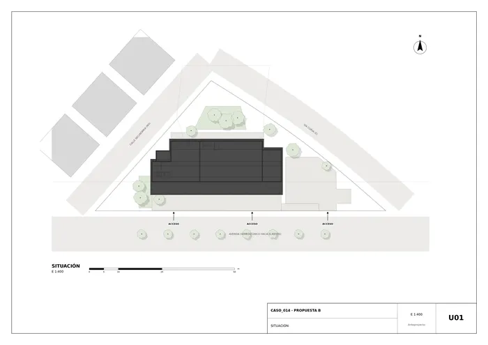
U01 · Situación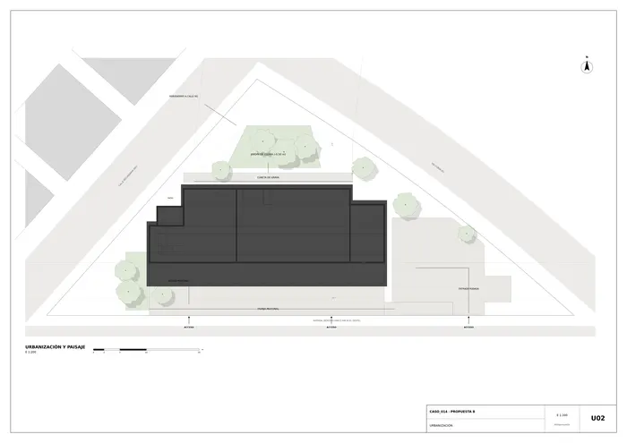
U02 · Urbanización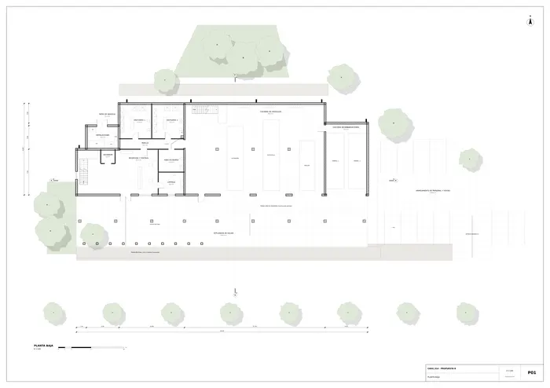
P01 · Planta baja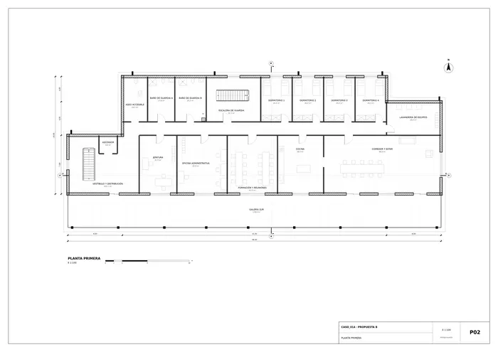
P02 · Planta primera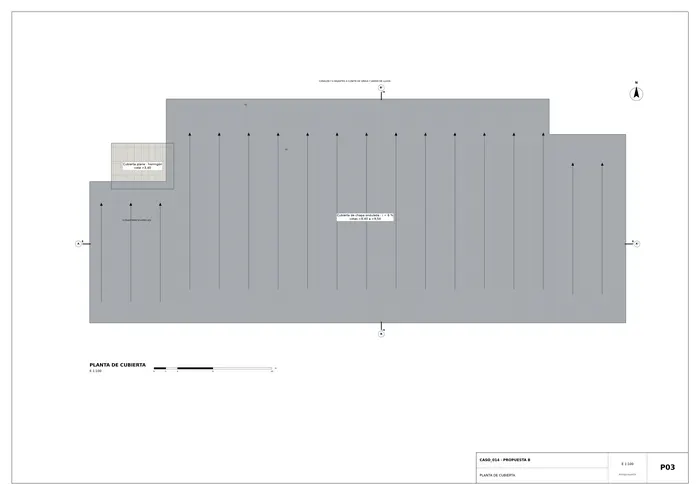
P03 · Planta de cubierta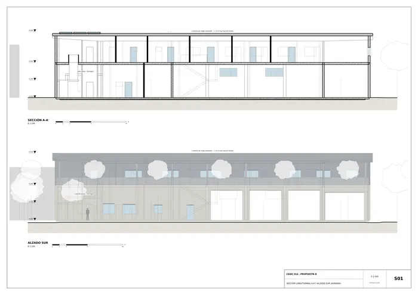
S01 · Sección longitudinal A-A y alzado sur (avenida)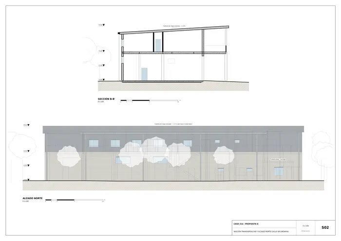
S02 · Sección transversal B-B y alzado norte (calle secundaria)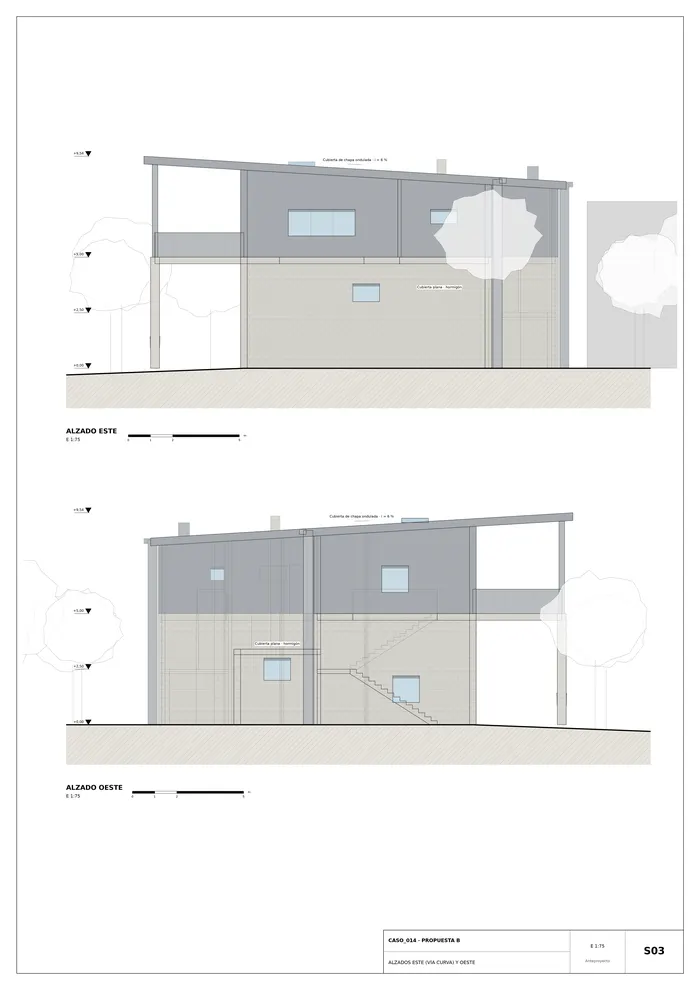
S03 · Alzados este (vía curva) y oeste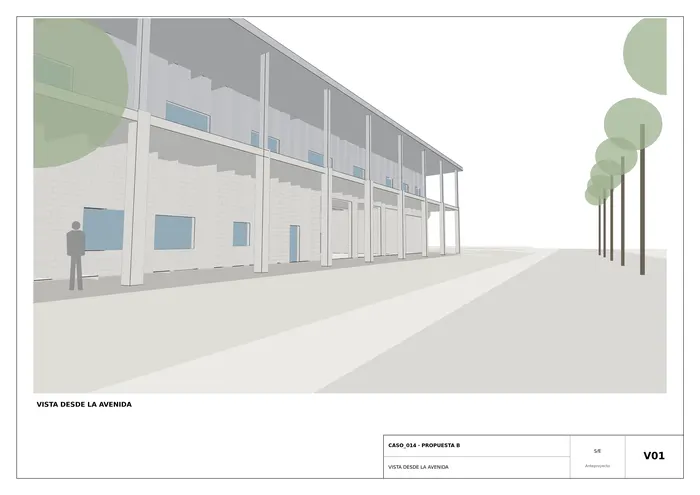
V01 · Vista desde la avenida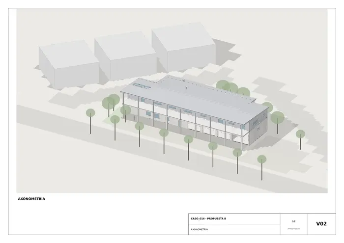
V02 · Axonometría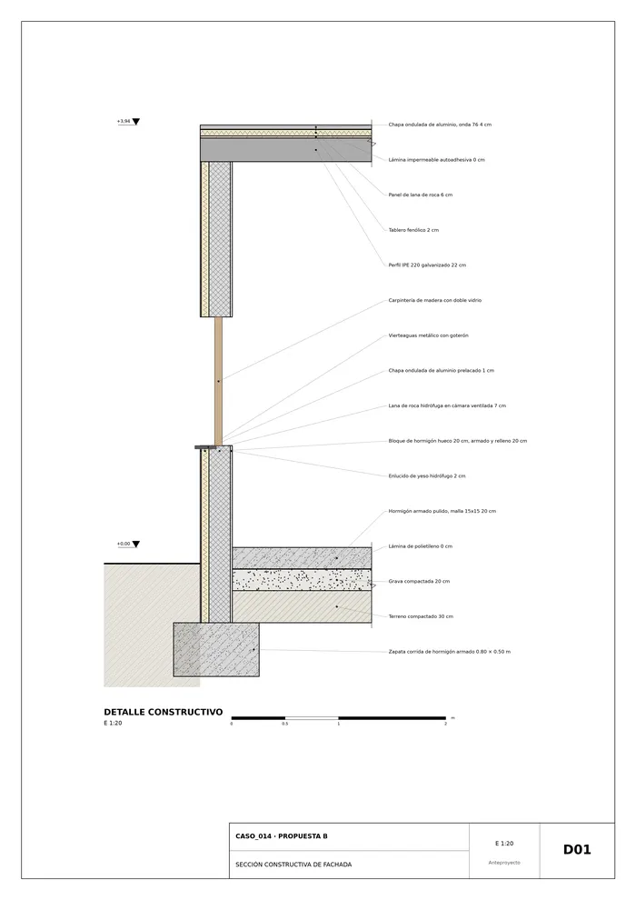
D01 · Sección constructiva de fachadaMemoria de la propuesta tal como la entregó el sistema. Se han omitido las notas internas del proceso (revisiones, control de reconocimiento y referencias a archivos de trabajo).